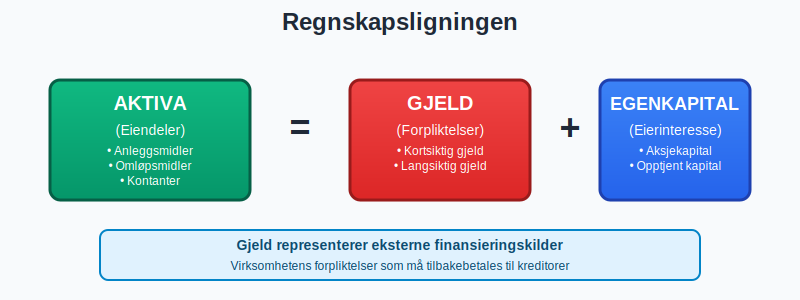
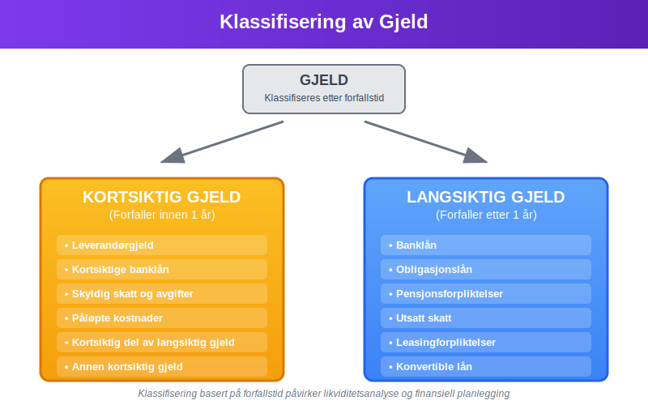
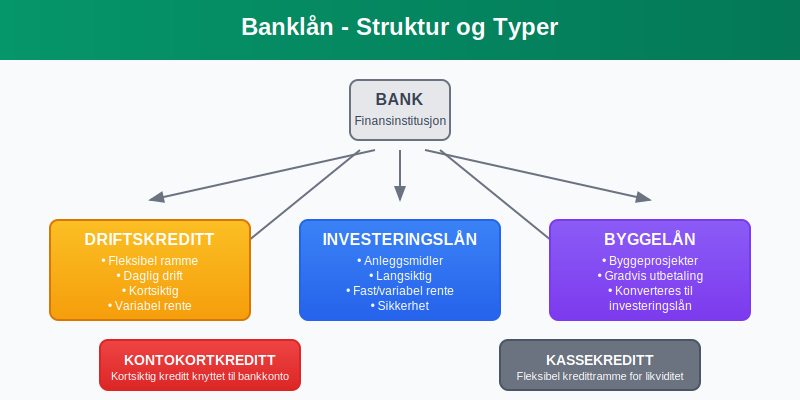
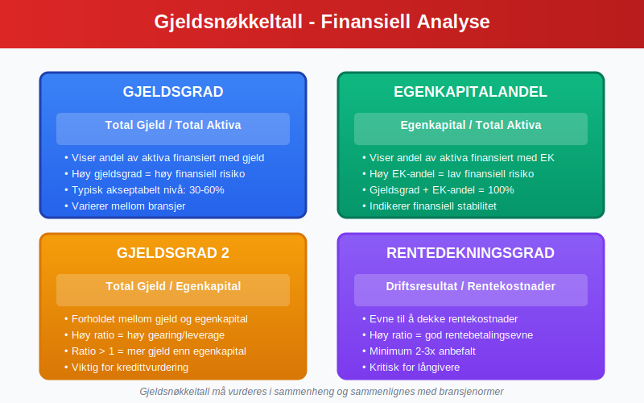
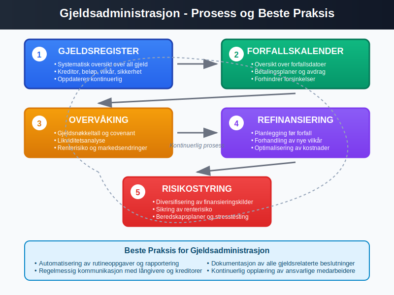

Gjeld er en av de mest sentrale komponentene i regnskapsføring og representerer virksomhetens forpliktelser overfor eksterne parter. Som en kritisk del av balansen, påvirker gjeld både virksomhetens finansielle stilling og fremtidige kontantstrømmer. Denne artikkelen gir en omfattende gjennomgang av gjeldsbegrepet, klassifisering, regnskapsføring og praktisk håndtering.
Seksjon 1: Grunnleggende om Gjeld
Gjeld defineres som virksomhetens nåværende forpliktelser som oppstår fra tidligere hendelser, og som forventes å resultere i en utstrømning av økonomiske ressurser. Gjeld er en av de tre hovedkomponentene i den fundamentale regnskapsligningen:
Aktiva = Gjeld + Egenkapital

1.1 Kjennetegn ved Gjeld
For at en forpliktelse skal klassifiseres som gjeld, må den oppfylle følgende kriterier:
- Nåværende forpliktelse: Forpliktelsen må eksistere på balansedagen
- Oppstått fra tidligere hendelser: Forpliktelsen må være et resultat av tidligere transaksjoner eller hendelser
- Sannsynlig utstrømning: Det må være sannsynlig at oppgjør vil kreve utstrømning av økonomiske ressurser
- Pålitelig måling: Forpliktelsens størrelse må kunne måles pålitelig
1.2 Gjeld vs. Andre Forpliktelser
Det er viktig å skille mellom gjeld og andre typer forpliktelser:
- Betinget gjeld: Forpliktelser som avhenger av fremtidige hendelser
- Konstruktive forpliktelser: Forpliktelser som oppstår fra etablert praksis
- Kontraktuelle forpliktelser: Forpliktelser som oppstår fra juridiske kontrakter
Seksjon 2: Klassifisering av Gjeld
Gjeld klassifiseres primært basert på forfallstid, som har betydelige implikasjoner for likviditetsanalyse og finansiell planlegging.

2.1 Kortsiktig Gjeld
Kortsiktig gjeld er forpliktelser som forfaller til betaling innen ett år fra balansedagen:
Hovedtyper Kortsiktig Gjeld:
- Leverandørgjeld: Skyldig beløp til leverandører for varer og tjenester
- Kortsiktig del av langsiktig gjeld: Avdrag på langsiktige lån som forfaller neste år
- Påløpte kostnader: Kostnader som er pådratt men ikke betalt
- Skyldig skatt og avgifter: Forfalt eller påløpt skatt og mva
- Kortsiktige banklån: Kredittlinjer og kortsiktige lån
- Annen kortsiktig gjeld: Diverse kortsiktige forpliktelser
2.2 Langsiktig Gjeld
Langsiktig gjeld er forpliktelser som forfaller til betaling mer enn ett år fra balansedagen:
Hovedtyper Langsiktig Gjeld:
- Banklån: Langsiktige lån fra finansinstitusjoner
- Obligasjonslån: Lån gjennom utstedelse av obligasjoner
- Pensjonsforpliktelser: Forpliktelser knyttet til ansattes pensjonsrettigheter
- Utsatt skatt: Skatteforpliktelser som forfaller i fremtiden
- Leasingforpliktelser: Forpliktelser under leasingavtaler
- **Konvertible lån: Lån som kan konverteres til aksjer
Seksjon 3: Detaljert Gjennomgang av Gjeldstyper
3.1 Leverandørgjeld
Leverandørgjeld er en av de vanligste formene for kortsiktig gjeld og oppstår når virksomheten kjøper varer eller tjenester på kreditt.
Regnskapsføring av Leverandørgjeld:
| Transaksjon | Debet | Kredit |
|---|---|---|
| Kjøp på kreditt | Varekostnad/Kostnad | Leverandørgjeld |
| Betaling av gjeld | Leverandørgjeld | Bank |
Håndtering av Leverandørgjeld:
- Betalingsbetingelser: Vanligvis 30-60 dager betalingsfrist
- Kontantrabatter: Rabatt for tidlig betaling
- Forfallsoppfølging: Systematisk oppfølging av forfallsdatoer
- Avstemming: Regelmessig avstemming mot leverandørenes kontoutskrifter
3.2 Banklån og Finansiering
Banklån utgjør ofte en betydelig del av virksomhetens gjeld og krever nøye oppfølging og analyse. I mange tilfeller krever långivere også sikkerhet, for eksempel ved bruk av en bankgaranti, spesielt i bygge- og anleggsprosjekter.

Typer Banklån:
- Driftskreditt: Fleksibel kredittramme for daglig drift
- Investeringslån: Langsiktige lån for anleggsmidler
- Byggelån: Spesialiserte lån for byggeprosjekter
- Kontokortkreditt: Kortsiktig kreditt knyttet til bankkonto
Regnskapsføring av Banklån:
| Hendelse | Debet | Kredit |
|---|---|---|
| Opptak av lån | Bank | Langsiktig gjeld |
| Rentekostnad | Rentekostnad | Påløpte renter |
| Avdrag | Langsiktig gjeld | Bank |
| Reklassifisering | Kortsiktig gjeld | Langsiktig gjeld |
3.3 Skatt og Avgifter
Skatteforpliktelser utgjør en viktig del av virksomhetens gjeld og krever spesiell oppmerksomhet.
Hovedtyper Skattegjeld:
- Skyldig selskapsskatt: Beregnet skatt på årets resultat
- Skyldig arbeidsgiveravgift: Avgift på utbetalte lønn
- Skyldig merverdiavgift: Innbetalt mva fra kunder minus fradragsberettiget mva
- Forskuddstrekk: Trukket skatt fra ansattes lønn
3.4 Æresgjeld
Æresgjeld er en type uhildet forpliktelse som baseres på tillit og ærefull avtale uten skriftlig kontrakt. Selv om det ikke finnes formell dokumentasjon, forventes det at gjelden tilbakebetales etter «heder og ære».
Kjennetegn ved Æresgjeld
- Muntlig avtale: Basert på enighet uten skriftlig kontrakt
- Tillit: Krever høy grad av tillit mellom partene
- Usikker forfallstid: Tilbakebetalingstidspunktet kan være fleksibelt eller udefinert
- Ingen sikkerhet: Vanligvis ingen pant eller garantier
Forskjell mellom Æresgjeld og Formell Gjeld
| Egenskap | Æresgjeld | Formell Gjeld |
|---|---|---|
| Grunnlag | Muntlig avtale og tillit | Skriftlig kontrakt og dokumentasjon |
| Sikkerhet | Ingen | Pant, garanti eller avtalevilkår |
| Forfallsdato | Udefinert eller fleksibel | Fastsatt i avtale |
| Registrering | Ikke regnskapsført før forfall | Registreres ved opptak |
Seksjon 4: Gjeldsanalyse og Nøkkeltall
4.1 Viktige Gjeldsnøkkeltall
Analyse av gjeld er kritisk for å vurdere virksomhetens finansielle helse og risiko:

Primære Gjeldsnøkkeltall:
| Nøkkeltall | Formel | Tolkning |
|---|---|---|
| Gjeldsgrad | Total gjeld / Total aktiva | Andel av aktiva finansiert med gjeld |
| Egenkapitalandel | Egenkapital / Total aktiva | Andel av aktiva finansiert med egenkapital |
| Gjeldsgrad 2 | Total gjeld / Egenkapital | Forholdet mellom gjeld og egenkapital |
| Rentedekningsgrad | Driftsresultat / Rentekostnader | Evne til å dekke rentekostnader |
4.2 Likviditetsanalyse
Kortsiktig gjeld er spesielt viktig for likviditetsanalyse:
Likviditetsnøkkeltall:
- Likviditetsgrad 1: Omløpsmidler / Kortsiktig gjeld
- Likviditetsgrad 2: (Omløpsmidler - Varelager) / Kortsiktig gjeld
- Arbeidskapital: Omløpsmidler - Kortsiktig gjeld
4.3 Gjeldskapasitet og Bæreevne
Vurdering av hvor mye gjeld virksomheten kan håndtere:
- Kontantstrømanalyse: Evne til å generere kontanter for gjeldsservice
- Stresstest: Analyse av gjeldsevne under ulike scenarioer
- Covenant-overholdelse: Oppfyllelse av lånevilkår og finansielle nøkkeltall
Seksjon 5: Regnskapsføring og Praktisk Håndtering
5.1 Innregning av Gjeld
Gjeld skal innregnes når:
- Virksomheten har en nåværende forpliktelse
- Forpliktelsen oppstår fra tidligere hendelser
- Det er sannsynlig at oppgjør krever utstrømning av ressurser
- Beløpet kan måles pålitelig
5.2 Måling av Gjeld
Førstegangsinnregning:
- Kostpris: Virkelig verdi av mottatt vederlag
- Transaksjonskostnader: Inkluderes i kostprisen
Etterfølgende måling:
- Amortisert kost: For de fleste typer gjeld
- Virkelig verdi: For enkelte finansielle instrumenter
5.3 Gjeldsadministrasjon

Beste Praksis for Gjeldsadministrasjon:
- Gjeldsregister: Systematisk oversikt over all gjeld
- Forfallskalender: Oversikt over forfallsdatoer og betalingsplaner
- Refinansieringsplanlegging: Planlegging av refinansiering før forfall
- Renterisikostyring: Håndtering av renterisiko gjennom sikring
- Covenant-overvåking: Kontinuerlig overvåking av lånevilkår
Seksjon 6: Gjeld i Ulike Selskapsformer
6.1 Gjeld i Aksjeselskap
I aksjeselskap har gjeld spesielle karakteristikker:
- Begrenset ansvar: Aksjonærenes ansvar begrenset til innskutt kapital
- Selskapsgjeld: Gjeld tilhører selskapet, ikke aksjonærene
- Aksjonærlån: Spesielle regler for lån mellom aksjonær og selskap
6.2 Gjeld i Enkeltpersonforetak
I enkeltpersonforetak har eieren personlig ansvar:
- Ubegrenset ansvar: Eieren hefter personlig for all virksomhetsgjeld
- Privat vs. virksomhetsgjeld: Viktig å skille mellom private og forretningsmessige forpliktelser
Seksjon 7: Gjeldshåndtering og Risikostyring
7.1 Gjeldsrisiko
Ulike typer risiko knyttet til gjeld:
- Kredittrisiko: Risiko for at långiver ikke får tilbakebetalt
- Likviditetsrisiko: Risiko for ikke å kunne møte kortsiktige forpliktelser
- Renterisiko: Risiko knyttet til renteendringer
- Refinansieringsrisiko: Risiko ved refinansiering av gjeld
7.2 Gjeldsoptimalisering
Strategier for optimal gjeldsstruktur:
- Balanse mellom kortsiktig og langsiktig gjeld
- Diversifisering av finansieringskilder
- Timing av gjeldsopptak og refinansiering
- Sikring av renterisiko
7.3 Gjeldssanering og Restrukturering
Når virksomheten får betalingsproblemer:
- Forhandling med kreditorer: Reforhandling av betalingsbetingelser
- Gjeldskonvertering: Konvertering av gjeld til egenkapital
- Akkord: Avtale om delvis gjeldslette
- Konkurs: Siste utvei ved insolvens
Seksjon 8: Rapportering og Noteopplysninger
8.1 Presentasjon i Balansen
Gjeld skal presenteres systematisk i balansen:
| Gjeldstype | Klassifisering | Presentasjon |
|---|---|---|
| Leverandørgjeld | Kortsiktig | Egen linje |
| Banklån | Kort-/langsiktig | Spesifisert etter type |
| Skattegjeld | Kortsiktig | Egen linje |
| Påløpte kostnader | Kortsiktig | Samlet eller spesifisert |
8.2 Noteopplysninger
Viktige noteopplysninger om gjeld:
- Forfallsanalyse: Når gjelden forfaller
- Rentebetingelser: Renter og sikkerhet
- Valutaeksponering: Gjeld i utenlandsk valuta
- Covenant-bestemmelser: Lånevilkår og restriksjoner
Seksjon 9: Gjeld og Kontantstrømanalyse
9.1 Gjeld i Kontantstrømoppstillingen
Gjeld påvirker kontantstrømmen på flere måter:
- Operasjonelle aktiviteter: Endringer i arbeidskapital
- Finansieringsaktiviteter: Opptak og nedbetaling av gjeld
- Renteutbetalinger: Klassifisering av rentekostnader
9.2 Gjeldsservice og Kontantstrøm
Analyse av evne til å betjene gjeld:
- Fri kontantstrøm: Kontantstrøm tilgjengelig for gjeldsservice
- Gjeldsservicedekning: Kontantstrøm i forhold til gjeldsbetjening
- Kontantkonverteringssyklus: Tid fra investering til kontantinngang
Konklusjon
Gjeld er en fundamental komponent i regnskapsføring som krever grundig forståelse og nøye håndtering. Fra enkle leverandørforpliktelser til komplekse finansielle instrumenter, påvirker gjeld alle aspekter av virksomhetens finansielle stilling og drift.
Effektiv gjeldshåndtering innebærer:
- Systematisk klassifisering og regnskapsføring
- Kontinuerlig overvåking av gjeldsnøkkeltall og likviditet
- Proaktiv risikostyring og refinansieringsplanlegging
- Transparent rapportering til interessenter
Ved å forstå gjeldsbegrepet grundig og implementere beste praksis for gjeldshåndtering, kan virksomheter optimalisere sin kapitalstruktur og sikre langsiktig finansiell stabilitet. Gjeld er ikke bare en forpliktelse, men også et strategisk verktøy for vekst og verdiskaping når det håndteres riktig.
For videre lesning om relaterte emner, se våre artikler om kortsiktig gjeld, balanse, egenkapital, og finansregnskap.